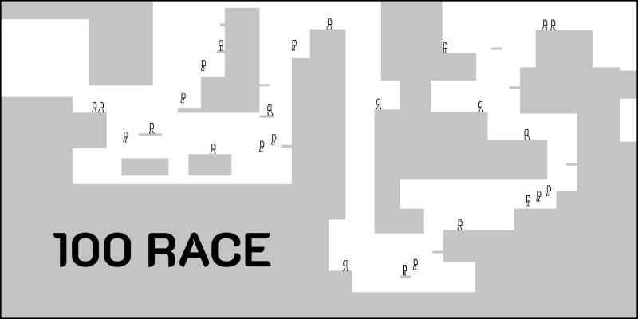
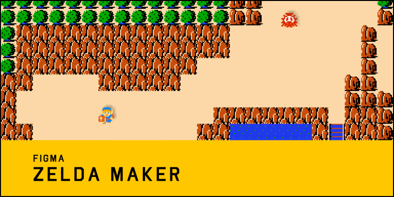
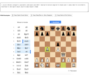
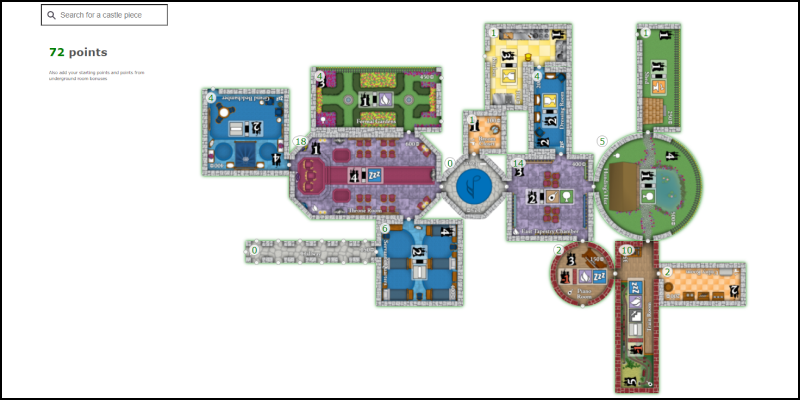
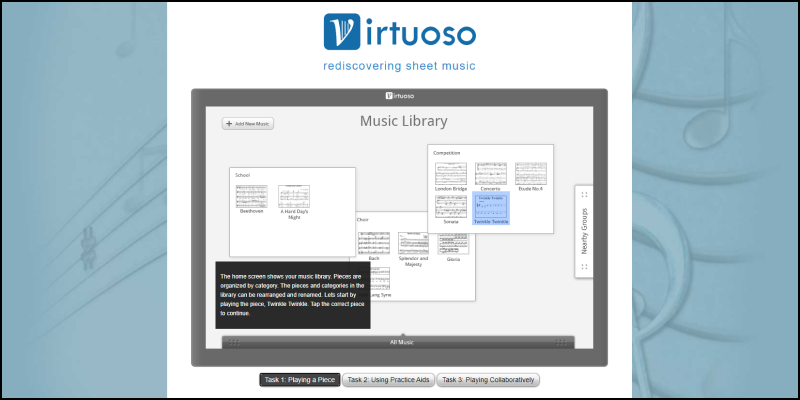

👋
I'm Golf Sinteppadon, a software engineer currently at Figma
Personal Projects
Seattle Band Map
Featured in a Wired.com article, Seattle Band Map is an experimental map of local bands. Powered by GraphViz, the user-submitted bands connect to each other if they have played together or have shared a band member. The result is a sprawling spiderweb of the Seattle music scene.

Figma Plugin: 100 Race
GIF from Twitter. Race to the finish vs. up to 100 people on your own custom race courses w/ my Figma Maker Week Plugin, 100 Race! This is a simple plugin that takes in user input and does some simple platforming calculations to move a node around. The viewport then follows that node. The magic lies in Figma's multiplayer, which lets up to 100 users run this plugin simultaneously to edit nodes on the same page.
Figma Plugin: Zelda Maker
A Figma Plugin to play and make Zelda worlds. Create worlds right in Figma, then run this Plugin to play them! Figma is a collaborative interface design tool, and I think level design for games is another type of design that benefits greatly from collaboration.
Figma Plugin: Asteroids
Play the arcade game Asteroids in Figma with friends! Supports multiplayer. This Figma Maker Week project was inspired by a quote from a coworker “Figma is a multiplayer game engine that happens to be used for UX design”.

Gfychess
A web tool to create and share chess animated GIFs, co-authored by Karl Jiang. There are already excellent chess tools on the web for developing your chess game including position evaluators, opening explorers, endgame puzzles. What felt missing was a simple way to share an exciting moment in a chess game with a friend.
Mad Castles
After spending many hours playing the 2-4 player board game, The Castles of Mad King Ludwig, co-author Karl Jiang and I felt the need for an automated way to sum up castle points. We created Mad Castles, an app that lets you input your castle and tells you how many points it is worth.
Virtuoso Sheet Music
Virtuoso is a concept sheet music device that is designed to replace a musician's sheet music library. Made for a UW Human Centered Design & Engineering class, our team gathered feedback from student musicians in an attempt to rediscover sheet music.
Winsome Trading Inc
Winsome, a furniture distributor, needed customers to be able to easily view their products online. Using Ruby on Rails and PostgreSQL I implemented a visual redesign while bringing their furniture listings to the web.

AI Soccer
Watch the beautiful game
Chuck Norris Facts
A different fact every time
Meet Blocky
Simple 2D character movement
GS Paint
Unleash your inner artist
Match fills to local styles
Figma plugin for bulk color matching
Image to 1px rectangles
Figma plugin for converting images to nodes